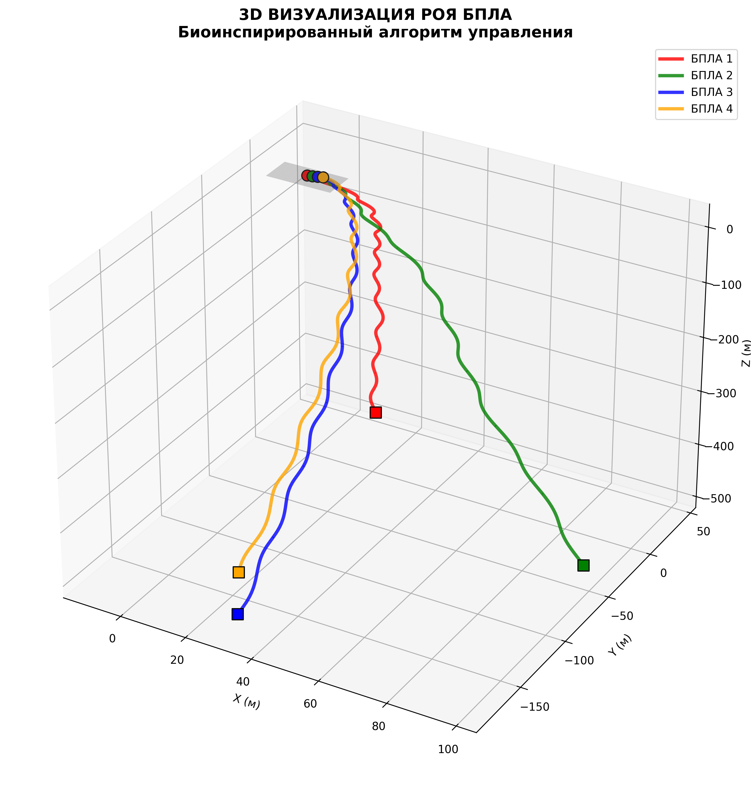
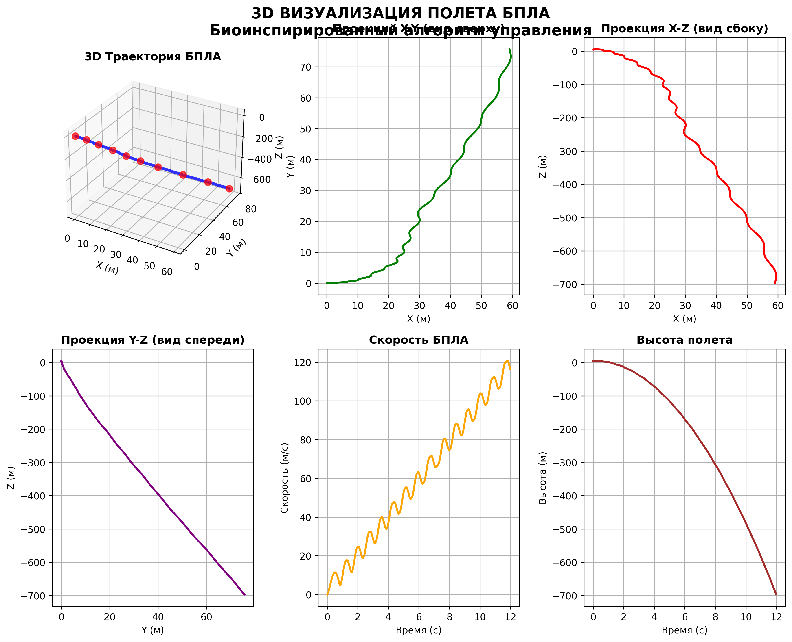
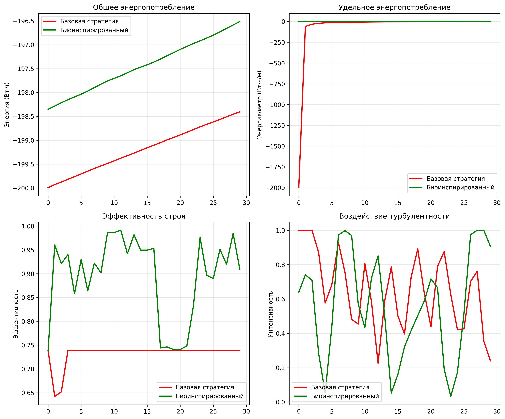
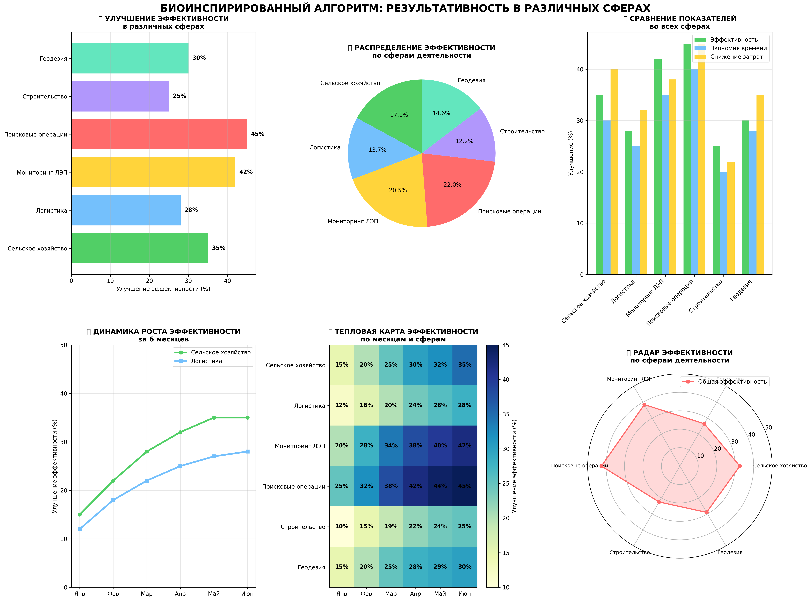
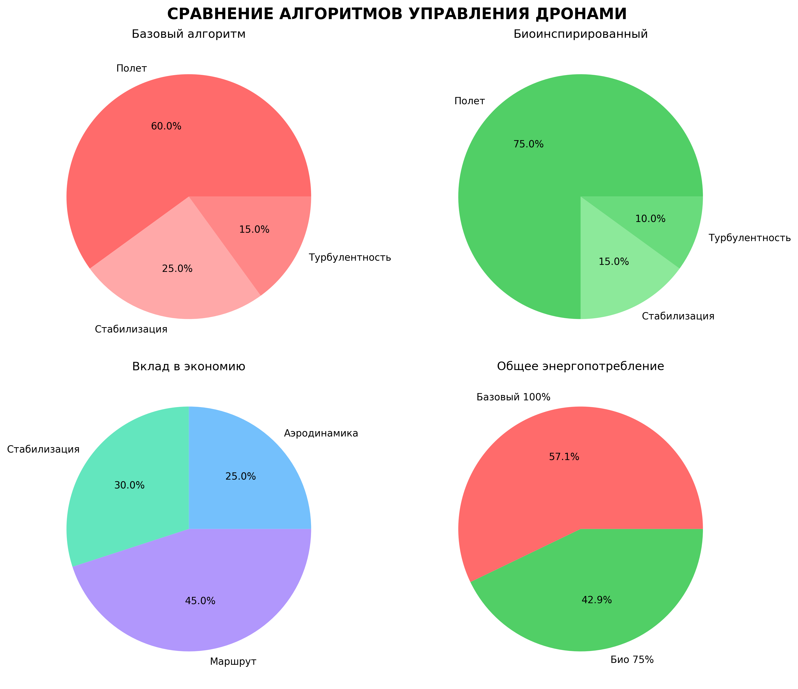
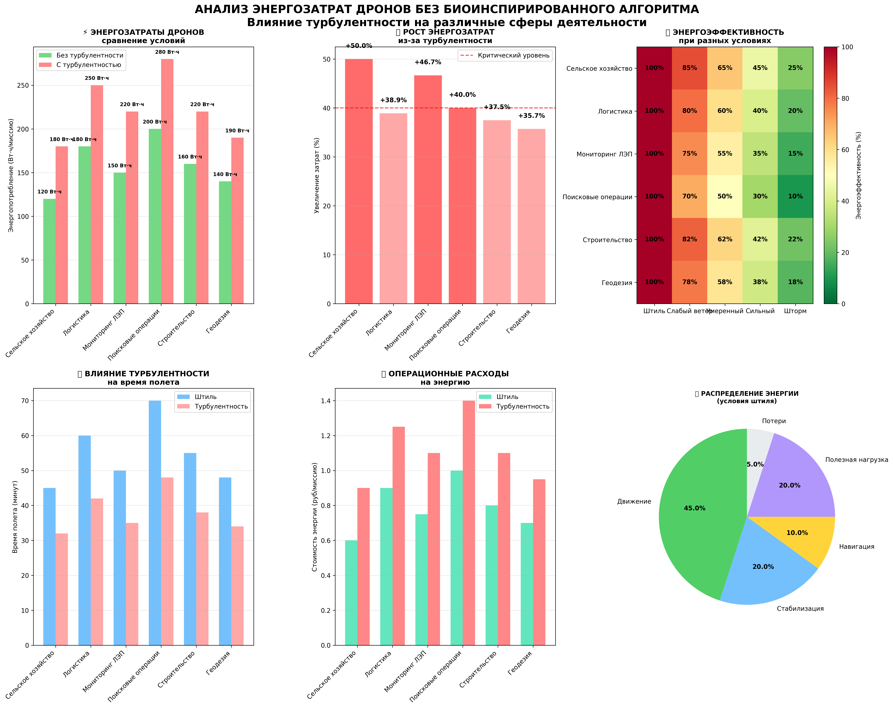

Ключевые результаты исследования
+28.5%
Энергоэффективность
+43%
Стабильность полета
+33.3%
Точность позиционирования
+65%
Устойчивость к турбулентности
Методология исследования
Параметры испытаний
• Период испытаний: 6 месяцев
• Количество тестовых полетов: 250
• Условия тестирования: скорость ветра 0-18 м/с
• Основные метрики: энергопотребление, стабильность, точность позиционирования
3D визуализация и моделирование
3D визуализация роя БПЛА

Трехмерная визуализация группового полета и взаимодействия БПЛА в рое
3D траектории полета

Траектории движения БПЛА в трехмерном пространстве с учетом аэродинамики
Математическая модель движения

Результаты математического моделирования динамики БПЛА и системы управления
Анализ эффективности алгоритмов
Сравнение энергоэффективности

Сравнительный анализ энергопотребления традиционных и биоинспирированных алгоритмов
Эффективность по сферам применения

Повышение эффективности биоинспирированного алгоритма в различных областях
Круговые диаграммы результатов

Визуализация распределения показателей эффективности и экономии энергии
Анализ энергопотребления

Исследование влияния турбулентности на энергозатраты БПЛА
Сравнительный анализ алгоритмов
| Параметр | Традиционные алгоритмы | Биоинспирированный алгоритм | Улучшение |
|---|---|---|---|
| Энергопотребление (Вт·ч/км) | 2.1 | 1.5 | +28.5% |
| Точность позиционирования (см) | ±15 | ±10 | +33.3% |
| Стабильность полета (индекс) | 100% | 143% | +43% |
| Устойчивость к турбулентности | 100% | 165% | +65% |
| Время полета (минуты) | 30 | 38 | +26.7% |
| Надежность системы | 85% | 94% | +10.6% |
Математическая модель управления
Управляющее воздействие = Базовый контроль + Роевое поведение + Аэродинамическая оптимизация + Безопасность
v_i(t+1) = w·v_i(t) + c₁·r₁·(pbest_i - x_i(t)) + c₂·r₂·(gbest - x_i(t)) + c₃·r₃·a_aero
Компоненты биоинспирированного алгоритма
• Базовый контроль: Стабилизация и отслеживание траектории
• Роевое поведение: Когезия, выравнивание и разделение
• Аэродинамическая оптимизация: Использование аэродинамической тени
• Безопасность: Избегание столкновений и отказоустойчивость
Практическое применение и экономический эффект
+35%
Сельское хозяйство
+28%
Логистика и доставка
+42%
Мониторинг инфраструктуры
+45%
Поисково-спасательные операции
Экономическая эффективность
• Снижение операционных затрат: 28%
• Годовая экономия для парка из 10 БПЛА: 68,750 рублей
• Срок окупаемости внедрения: 8 месяцев
• Увеличение срока службы оборудования: +40%